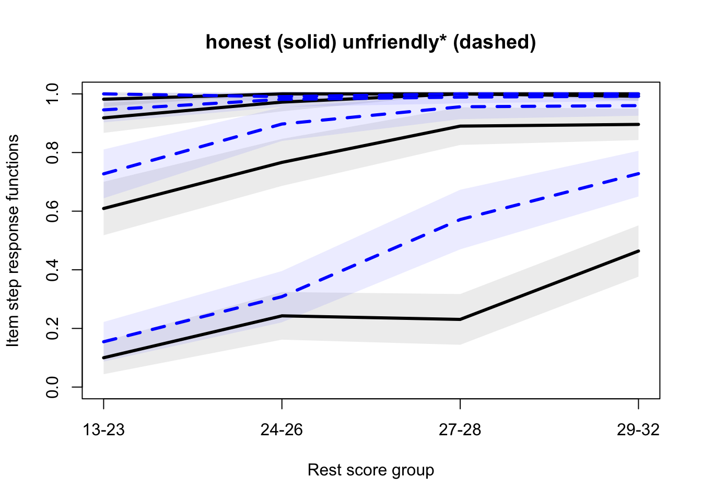

Code
suppressPackageStartupMessages({
library(mokken)
})suppressPackageStartupMessages({
library(mokken)
})L’Analisi delle Scale Mokken (MSA), così denominata in onore del matematico e scienziato politico olandese Robert J. Mokken, è un insieme di metodi utilizzati nell’ambito della Teoria Non Parametrica della Risposta agli Item (NIRT) per valutare l’adeguatezza dei dati ai suoi modelli.
Secondo la Teoria della Risposta agli Item (IRT), i costrutti psicologici sono latenti, ovvero non direttamente osservabili, e si manifestano attraverso le risposte ai test. Le reazioni dei partecipanti ai test (cioè, le risposte agli item) dipendono dalla posizione del rispondente su un continuum latente e riflettono il grado in cui i rispondenti possiedono il costrutto in esame.
È chiaro però che la relazione tra la posizione del rispondente su un continuum latente e le sue risposte agli item, a causa degli errori di misurazione, non è una relazione diretta. Il contributo dei modelli della NIRT è quelllo di fornire gli strumenti analitici necessari per esaminare la congruenza e la pertinenza degli item di un test con la variabile latente sottostante. In particolare, i modelli MSA, che sono modelli probabilistici basati su tratti latenti e, avendo una natura non parametrica, sono caratterizzati da presupposti meno restrittivi rispetto ai modelli IRT parametrici, possono essere usati nella validazione di strumenti di misura psicometrici e nell’ordinare rispondenti e item lungo una scala ordinale. I modelli MSA sono applicabili sia a item dicotomici che politomici.
Esaminiamo ora le somiglianze e le differenze tra la Teoria Classica dei Test (CTT) e l’Analisi della Scala di Mokken (MSA).
La CTT si basa su diverse assunzioni fondamentali: 1. I punteggi osservati sono la somma dei punteggi veri e dei punteggi di errore, con l’aspettativa che i punteggi di errore abbiano una media di zero su prove ripetute. 2. Non c’è correlazione tra i punteggi di errore e i punteggi veri. 3. I punteggi veri in un test non sono correlati ai punteggi di errore in un altro test. 4. I punteggi di errore in due test somministrati agli stessi soggetti sono non correlati.
Nella CTT, i punteggi grezzi totali sono considerati indicatori delle posizioni dei rispondenti sul continuum del tratto latente. La proporzione di item corretti (valore p) indica la facilità degli item, mentre la correlazione tra item e punteggio totale misura la discriminazione degli item. La CTT enfatizza l’importanza dell’affidabilità, definita come la correlazione tra i punteggi osservati su due forme parallele del test.
Confrontando la CTT con la MSA, troviamo alcune somiglianze nelle metodologie di calcolo degli indici di abilità delle persone e di difficoltà degli item. Nella MSA,
Tuttavia, una differenza fondamentale tra la MSA e la CTT risiede nella testabilità dei modelli. A differenza della CTT, i modelli MSA permettono di verificare empiricamente le loro assunzioni, come l’indipendenza locale, l’unidimensionalità e la monotonicità. Ad esempio, un coefficiente di scalabilità negativo nella MSA smentirebbe gli assiomi del Modello di Omogeneità Monotona (MHM). Questa capacità di testare empiricamente le sue assunzioni rende la MSA un modello particolarmente robusto e trasparente.
In conclusione, mentre la CTT fornisce un quadro teorico solido per la comprensione e l’interpretazione dei punteggi dei test, ma non fornisce direttamente gli strumenti statistici per testare le assunzioni del modello, la MSA offre un approccio testabile e più flessibile. La MSA di dimostra dunque particolarmente utile nell’analizzare la struttura dei dati dei test e nella valutazione della validità delle scale di misurazione. Queste caratteristiche rendono la MSA un complemento prezioso alla CTT nella pratica della misurazione psicologica.
La MSA è stata inizialmente sviluppata per item dicotomici. In seguito però è stata estesa da Molenaar (1982a, 1997) per includere anche gli item politomici. Questa estensione mantiene i principi fondamentali della MSA applicati agli item dicotomici, ma aggiunge alcune specificità legate alla natura degli item politomici.
Nel caso degli item politomici, come quelli usati nelle scale Likert, le assunzioni del modello MSA vengono esaminate non solo a livello dell’intero item, ma anche per ciascun “passaggio” o categoria di risposta. Prendendo come esempio un item Likert a cinque punti, che va da “fortemente d’accordo” a “fortemente in disaccordo”, ci sono quattro passaggi distinti, ognuno rappresentante una transizione tra due categorie consecutive.
Per ogni passaggio di un item politomico, si definisce una Funzione di Risposta del Passaggio dell’Item (ISRF), che descrive la probabilità di scegliere una specifica categoria di risposta in funzione del tratto latente θ. Le ISRF sono cruciali per comprendere come le diverse categorie di risposta si relazionino al tratto latente misurato dall’item.
Affinché il modello di omogeneità monotona sia valido per gli item politomici, è necessario che le probabilità di scegliere una categoria di risposta k o superiore aumentino monotonamente con l’aumento di θ. Questo implica che le categorie di risposta debbano essere ordinate in modo significativo, rappresentando livelli progressivamente più alti del tratto latente.
Un aspetto fondamentale nell’analisi di item politomici nella MSA è l’assunzione di monotonicità, che richiede che le ISRF siano funzioni crescenti in θ. In altre parole, man mano che il tratto latente aumenta, aumenta anche la probabilità che un individuo scelga categorie di risposta superiori.
In sintesi, l’estensione della MSA agli item politomici fornisce uno strumento potente per analizzare item con più categorie di risposta, consentendo una misurazione più dettagliata e sfumata del tratto latente. Questa estensione rende la MSA particolarmente adatta per applicazioni in cui si utilizzano scale di risposta con gradazioni multiple, come nei questionari di valutazione del benessere psicologico, nei sondaggi di opinione o nelle valutazioni educative. Attraverso l’analisi dei passaggi degli item, la MSA per item politomici permette una comprensione più approfondita di come gli individui interagiscano con le diverse opzioni di risposta e di come queste risposte riflettano i loro livelli sul tratto latente.
L’affidabilità in ambito di test psicometrici si riferisce al grado in cui un test è esente da errori di misurazione. Si valuta tipicamente esaminando la stabilità dei punteggi ottenuti dagli esaminandi in diverse somministrazioni del test, sia nel tempo che attraverso forme parallele del test. L’idea di base è che, in assenza di cambiamenti nei punteggi veri degli esaminandi, ci si aspetterebbe una correlazione perfetta tra le diverse amministrazioni. Ogni deviazione da questa correlazione perfetta è attribuita all’influenza dell’errore di misurazione.
Tuttavia, ottenere misure di affidabilità attraverso forme parallele o ripetute somministrazioni nel tempo può essere impraticabile, a causa di problemi logistici e degli effetti di memoria o pratica. Pertanto, l’affidabilità è spesso stimata attraverso metodi che richiedono una singola somministrazione del test.
L’alfa di Cronbach è uno degli estimatori di affidabilità più utilizzati, sebbene presenti diverse limitazioni. In risposta a queste limitazioni, Mokken (1971) ha sviluppato un coefficiente di affidabilità non distorto, noto come ρ (rho) o statistica MS. Questo coefficiente presuppone la validità della doppia monotonicità, una supposizione piuttosto forte. Per affrontare alcune delle sfide associate alla statistica ρ, Van der Ark, Van der Palm e Sijtsma (2011) hanno proposto un altro indicatore di affidabilità chiamato Coefficiente di Affidabilità delle Classi Latenti (LCRC). Questo è uno stimatore non distorto dell’affidabilità dei punteggi dei test, le cui assunzioni sono meno stringenti rispetto alla statistica ρ, richiedendo solamente l’indipendenza locale. Questo rappresenta un vantaggio significativo del coefficiente LCRC rispetto al coefficiente ρ, poiché rende l’LCRC più applicabile e flessibile in una varietà di contesti di test.
In conclusione, la scelta del metodo più appropriato per stimare l’affidabilità dipende dalle caratteristiche specifiche del test e dalle esigenze di misurazione. Mentre l’alfa di Cronbach rimane uno standard ampiamente utilizzato, le alternative come il coefficiente ρ di Mokken e il LCRC offrono strumenti aggiuntivi e talvolta più adatti per valutare l’affidabilità, specialmente in situazioni dove le assunzioni dell’alfa di Cronbach non sono soddisfatte o quando si utilizzano modelli non parametrici come quelli proposti nell’Analisi delle Scale di Mokken.
I coefficienti di scalabilità nelle Scale Mokken, ovvero \(H\), \(H_i\) e \(H_{ij}\), sono indici chiave utilizzati per valutare la qualità di una misurazione nell’Analisi delle Scale Mokken (MSA). Questi coefficienti misurano la coerenza e l’ordinamento degli item e dei punteggi complessivi su un continuum latente, indicando in che misura gli item formano una gerarchia e se i punteggi degli item sono ordinati consistentemente.
Coefficienti di Scalabilità Singoli (\(H_i\)): Indicano la qualità di ogni singolo item. Un valore elevato di \(H_i\) significa che l’item ha una buona discriminazione e contribuisce efficacemente all’ordinamento degli esaminandi. Valori superiori a 0.30 sono generalmente considerati accettabili.
Coefficienti di Scalabilità per Coppie di Item (\(H_{ij}\)): Misurano la coerenza tra coppie di item. Valori positivi indicano che la coppia di item è coerente con il modello di omogeneità monotona. Valori negativi possono suggerire multidimensionalità o non monotonicità.
Coefficienti di Scalabilità per l’Intero Test (\(H\)): Questo indice valuta la qualità dell’intero test, indicando in che misura la struttura complessiva dei dati si avvicina a un modello di Guttman perfetto. Valori tra 0.30 e 0.40 indicano una scala debole, tra 0.40 e 0.50 una scala media e superiori a 0.50 una scala forte.
Questi coefficienti vengono calcolati basandosi sul rapporto tra gli errori di Guttman osservati e quelli attesi. Un coefficiente di \(H\) vicino a uno implica una perfetta conformità al modello di Guttman, mentre valori vicini a zero indicano la presenza di numerosi errori di Guttman.
La MSA consente di testare empiricamente se i dati si adattano al modello di omogeneità monotona, fornendo un quadro robusto per l’analisi degli item e dei punteggi dei test. I coefficienti di scalabilità offrono una guida per determinare la qualità e la coerenza degli item nel contesto di una scala unidimensionale. Sono particolarmente utili per identificare item che potrebbero essere ridondanti o non allineati con il tratto latente misurato.
Inoltre, i coefficienti di scalabilità forniscono informazioni preziose sulla validità di costrutto di una scala. Anche se una scala ha una forte discriminazione (indicata da valori elevati di \(H_i\) e \(H\)), potrebbe mancare di validità di costrutto se i suoi item misurano solo una porzione ristretta del costrutto. Allo stesso modo, valori elevati di \(H_{ij}\) tra specifiche coppie di item possono suggerire che uno degli item nella coppia sia ridondante.
In sintesi, i coefficienti di scalabilità nelle Scale Mokken non solo valutano la precisione nell’ordinamento degli esaminandi e la qualità degli item, ma aiutano anche a comprendere meglio la struttura e la validità di una scala. Questi coefficienti, quindi, giocano un ruolo cruciale nella selezione e nell’analisi degli item in contesti di misurazione psicometrica, educativa e di ricerca.
Gli errori standard (SE) sono fondamentali per interpretare correttamente i coefficienti di scalabilità nelle scale Mokken. Questi errori standard tengono conto dell’incertezza delle stime. Se l’errore standard è grande rispetto al coefficiente stesso, ad esempio un SE di .08 per un coefficiente Hi di .30, è probabile che il valore reale del coefficiente nella popolazione sia inferiore a .30, suggerendo che gli item potrebbero non essere scalabili.
La dimensione dell’errore standard dipende da due fattori: la dimensione del campione e l’asimmetria delle distribuzioni dei punteggi degli item. Con un campione più grande, gli errori standard sono generalmente più piccoli, mentre distribuzioni dei punteggi più asimmetriche portano a errori standard più grandi. Tuttavia, un ampio campione non garantisce stime precise dei coefficienti di scalabilità.
Per i coefficienti di scalabilità, possiamo calcolare gli intervalli di confidenza al 95% (CI) usando la formula:
\[ \text{95% CI} = H_i \pm (1.96 \times \text{SE}) \]
Per esempio, se \(H_i\) è .30 con un SE di .10, il CI sarà tra .10 e .50. Questo intervallo ampio implica che il valore reale di \(H_i\), con il 95% di confidenza, si trova in questo range, indicando una bassa affidabilità del coefficiente. Se \(H_i\) è .15 con un SE di .10, il CI sarà tra -.05 e .35, suggerendo che il vero coefficiente potrebbe essere zero o anche negativo nella popolazione, e quindi l’item dovrebbe essere scartato.
Mokken (1971) ha indicato che la monotonicità delle funzioni di risposta all’item (IRF) per tutti gli item utilizzati nel calcolo del punteggio totale X+ è una condizione sufficiente per la loro utilità nella classificazione degli esaminandi. Di conseguenza, gli item con bassi coefficienti di scalabilità vengono generalmente scartati.
Tuttavia, Crișan e colleghi (2020) consigliano di non rimuovere item inadatti dalle scale se non vi sono altri argomenti (ad esempio, di contenuto) per farlo. I guadagni in affidabilità, selezione delle persone e validità predittiva potrebbero non compensare la perdita di copertura del costrutto e validità dei criteri. Pertanto, la decisione di mantenere o rimuovere item da una scala dovrebbe basarsi principalmente su considerazioni teoriche, e i ricercatori applicati dovrebbero essere cauti nel non utilizzare regole empiriche per eliminare item in modo acritico.
In sintesi, l’analisi degli errori standard nei coefficienti di scalabilità delle scale Mokken fornisce informazioni cruciali sulla affidabilità e la validità degli item della scala. Tuttavia, le decisioni su quali item mantenere o scartare dovrebbero essere prese considerando non solo gli aspetti psicometrici ma anche il contesto teorico e il contenuto della scala stessa.
La Procedura di Selezione Automatica degli Item (AISP) è una metodologia impiegata nella MSA per selezionare un insieme di item da un pool più ampio che aderiscano alle assunzioni del Modello di Mokken (MHM). L’AISP aiuta a esaminare l’unidimensionalità e identifica item non scalabili.
Una scala di Mokken si compone di una serie di item selezionati in base a due criteri specifici. Prima di tutto, ogni item deve avere una covarianza (\(H_{i}\)) che superi un valore soglia (c), scelto dall’utente. Solitamente, si raccomanda di impostare questo valore soglia a c=.30. Il secondo criterio richiede che la covarianza tra ogni coppia di item (\(H_{ij}\)) sia maggiore di zero. In sintesi, per essere inclusi in una scala di Mokken, gli item devono avere sia una covarianza individuale (\(H_{i}\)) sia una covarianza reciproca (\(H_{ij}\)) positive e superiori a un valore minimo predefinito.
Questo processo inizia selezionando due item con la più alta \(H_{ij}\) e continua aggiungendo nuovi item che soddisfano i criteri. Se alcuni item non rispettano questi criteri, l’AISP tenta di costruire una seconda scala o li identifica come non scalabili.
Le scale costruite con l’AISP misurano un tratto latente comune, ordina in modo affidabile le persone e discriminano bene. Tuttavia, talvolta, un item può essere selezionato con un valore \(H_{i}\) inferiore a c, contraddicendo la definizione di scala di Mokken. Questi item inadatti dovrebbero essere esclusi successivamente.
L’AISP può essere vista come un’alternativa più efficiente all’analisi fattoriale, in quanto non è influenzata dalle difficoltà degli item e può essere applicata sia a item dicotomici che politomici. Tuttavia, i ricercatori dovrebbero considerare la teoria sostanziale e non affidarsi solo alle soluzioni statistiche prodotte dal software.
È importante notare che la scelta del valore limite inferiore c influisce sulla struttura della scala identificata. Valori più alti di c possono portare al rifiuto di molti item e alla formazione di scale sostanzialmente prive di significato con pochi item. D’altra parte, valori bassi di c possono nascondere la vera dimensionalità dei dati includendo tutti gli item in una singola scala. Il valore scelto dovrebbe dipendere dall’obiettivo specifico della ricerca.
Inoltre, l’AISP è paragonabile all’analisi fattoriale esplorativa, ma a differenza dell’analisi fattoriale, l’AISP può concludere senza trovare una scala valida se tutti i valori di \(H_{ij}\) sono inferiori a .30. Invece, l’analisi fattoriale trova sempre una soluzione, anche se non necessariamente significativa.
In conclusione, l’AISP è uno strumento utile per la costruzione di scale di Mokken, ma presenta limitazioni nella valutazione della dimensionalità. Gli studi di simulazione mostrano che questo metodo può essere meno efficiente rispetto ad altri metodi non parametrici nel rilevare la vera dimensionalità dei dati, soprattutto quando le dimensioni sono correlate o gli item saturano su più di una dimensione. Pertanto, i ricercatori dovrebbero utilizzare questo strumento con cautela e considerare un’ampia gamma di valori limite inferiori c per rivelare la vera struttura dei dati.
La monotonicità, un concetto chiave nelle scale Mokken, si riferisce alla relazione tra la posizione di una persona su una variabile latente (una caratteristica o tratto non direttamente osservabile) e la sua probabilità di rispondere correttamente a un item (domanda o affermazione). In sostanza, man mano che una persona si sposta verso livelli più elevati sulla variabile latente, la sua probabilità di dare una risposta corretta dovrebbe aumentare o rimanere la stessa, ma non diminuire. Questo principio si applica sia agli item con due possibili risposte (dicotomici) sia a quelli con più risposte (politomici).
Per valutare la monotonicità, si utilizzano diversi metodi, tra cui l’analisi dei gruppi di restscore. Il “restscore” è il punteggio totale ottenuto da un individuo in un test, escludendo il punteggio dell’item specifico che si sta analizzando. Ad esempio, in un test di 10 item, se si vuole esaminare l’item numero 10, il restscore per ogni persona sarà il suo punteggio totale escludendo il punteggio ottenuto all’item 10. Di conseguenza, si creano diversi gruppi di restscore, che vanno da 0 a 9 in questo caso.
La relazione tra restscore e monotonicità è la seguente: nei grafici, i gruppi di restscore sono confrontati con la percentuale di persone che hanno risposto correttamente all’item in questione all’interno di ogni gruppo. Idealmente, al crescere del restscore, la percentuale di risposte corrette dovrebbe aumentare o rimanere costante. Se i gruppi di restscore sono piccoli e quindi non forniscono stime affidabili, possono essere combinati con gruppi adiacenti per ottenere dimensioni maggiori e stime più precise.
Il restscore funge da sostituto per θ, la posizione sulla variabile latente. Se la monotonicità è rispettata, ci si aspetta che la percentuale di risposte corrette aumenti (o almeno rimanga costante) man mano che aumenta il restscore. In altre parole, persone con un restscore più alto dovrebbero avere una probabilità maggiore di rispondere correttamente rispetto a quelle con un restscore più basso. Questa aspettativa dovrebbe essere valida per tutte le coppie di gruppi di restscore.
L’analisi delle Funzioni di Risposta all’Item (IRF) è particolarmente utile perché permette di osservare come la performance degli item varia lungo il continuum del tratto latente. A differenza dell’IRT parametrico, dove l’attenzione è sulla stima dei parametri, l’IRT non parametrico (NIRT) si concentra sui metodi grafici, che sono fondamentali per comprendere come gli item funzionino a diversi livelli del tratto latente.
Per gli item politomici, la monotonicità è valutata sia complessivamente sia all’interno delle singole categorie di risposta. Inoltre, si utilizzano i coefficienti di scalabilità per valutare la monotonicità. Se il Modello di Omoegeneità Monotona (MHM) è valido, le covarianze tra tutte le coppie di item (Hij) devono essere non negative. Tuttavia, Hij non negativi non sono una condizione sufficiente per garantire IRFs non decrescenti e non assicurano l’adattamento al MHM. Nella pratica, item con valori di Hi superiori a .30 sono generalmente considerati accettabili.
In contesti psicologici ed educativi, la definizione della difficoltà degli item di un test è cruciale. Generalmente, questa difficoltà viene determinata attraverso le medie degli item nella popolazione target. Tuttavia, è importante considerare che l’ordine di difficoltà derivato dalle risposte medie della popolazione potrebbe non essere universale per ogni individuo.
Il concetto di Ordinamento Invariante degli Item (IIO) si riferisce alla necessità che l’ordine di difficoltà degli item rimanga consistente tra diversi sottogruppi di persone. Questo aspetto è fondamentale per garantire che i confronti tra i gruppi basati sui punteggi totali siano validi e che le differenze nei punteggi totali abbiano un significato reale. In ambito psicologico, ad esempio nei questionari sulla depressione o sull’ansia, l’IIO implica che un individuo con un punteggio totale più alto manifesti tutti i sintomi di una persona con un punteggio inferiore, oltre a sintomi aggiuntivi.
L’IIO è altresì desiderabile quando si ordinano gli item di un test da quelli più facili a quelli più difficili, per garantire che questa progressione sia valida per tutti gli esaminandi. In altre parole, un item considerato facile dovrebbe essere tale per tutti i partecipanti, così come un item difficile dovrebbe rappresentare una sfida per tutti.
Un ordinamento degli item che non rispetta l’IIO indica una variazione nella difficoltà degli item tra diversi gruppi. Questo può suggerire una funzione differenziale dell’item (DIF) o un bias, rendendo problematico ordinare gli item in base alla loro difficoltà.
Per valutare l’IIO, si utilizzano diverse tecniche come il metodo dei gruppi di restscore, il metodo di divisione degli item, le matrici delle proporzioni P(++)/P(–), e il metodo di divisione dei restscore. Queste procedure aiutano a determinare se l’ordine di difficoltà degli item è coerente attraverso diversi gruppi.
In conclusione, l’IIO è essenziale sia per la teoria della misurazione sia per l’interpretazione accurata dei punteggi dei test. Pur essendo un presupposto fondamentale nell’uso degli strumenti di misurazione, l’IIO spesso non viene verificato empiricamente. La sua conferma è particolarmente importante nei test che mirano a riflettere una struttura gerarchica o cumulativa dei tratti misurati. Per trarre conclusioni affidabili sui processi cognitivi evolutivi basati sull’ordine di difficoltà degli item, è cruciale dimostrare la validità dell’IIO.
Nel campo della psicometria, determinare la dimensione minima di un campione per i test statistici è un’area ben stabilita. Tuttavia, per quanto riguarda l’Analisi delle Scale Mokken (MSA), questo è un ambito ancora poco esplorato e ci sono pochi studi a riguardo. La ricerca in questo settore è necessaria per evitare sia la capitalizzazione sul caso sia l’utilizzo di campioni eccessivamente grandi, specialmente quando le risorse e il tempo a disposizione dei ricercatori sono limitati.
La “capitalizzazione sul caso” si riferisce a una condizione in cui una scala di Mokken viene identificata casualmente quando, in realtà, tale scala non esiste e ciò è dovuto alla ridotta dimensione del campione. Al contrario, può anche accadere che una scala esistente non venga identificata.
Uno studio condotto da Straat et al. (2014) ha esaminato le dimensioni minime del campione necessarie per l’Automated Item Selection Procedure (AISP) e per l’algoritmo genetico (GA). Lo studio ha valutato l’impatto di diversi fattori, inclusa la lunghezza del test, i valori approssimativi dei coefficienti di scalabilità (Hi) degli item e la correlazione tra le dimensioni nella scala. I risultati hanno evidenziato che la dimensione del campione necessaria dipende da tutti questi fattori. Tuttavia, il fattore più influente è risultato essere il valore di Hi. Con l’aumento di Hi, erano necessarie dimensioni di campione più piccole per assegnare correttamente gli item alle scale appropriate. La lunghezza del test non ha avuto un grande impatto sulla precisione della classificazione degli item nelle scale corrette. Tuttavia, le correlazioni tra le dimensioni hanno avuto qualche effetto in combinazione con vari livelli di Hi. Per valori di Hi intorno a .22, sono necessarie dimensioni di campione di 750-1000 persone per ottenere una precisione mediocre o adeguata, e di 1250-2500 persone per una precisione buona o eccellente. Con valori di Hi di .42, per una precisione mediocre o adeguata sono necessarie dimensioni di campione di 50 persone, mentre per una precisione buona o eccellente, la dimensione del campione dovrebbe essere di almeno 250. Quando le correlazioni tra le due dimensioni erano alte (ad esempio, .60) e i valori di Hi erano .42, erano necessarie dimensioni di campione maggiori per assegnare correttamente gli item alle scale rispetto alla condizione in cui le correlazioni erano .30 o 1.
Un altro studio condotto da Watson et al. (2018) ha indagato l’impatto della dimensione del campione sui coefficienti di scalabilità utilizzando dati reali. Hanno estratto campioni di 50, 250, 500, 600, 750 e 1000 persone da un campione più ampio di 7510 persone che hanno risposto a un questionario di 14 item con item a 5 punti Likert. Utilizzando il bootstrapping, hanno estratto 1000 campioni per ogni dimensione del campione. I risultati hanno mostrato che i valori medi di H e Hi non cambiavano notevolmente tra le diverse dimensioni del campione. Tuttavia, considerando gli intervalli di confidenza al 95%, dimensioni di campione più piccole hanno portato a un maggior numero di occasioni in cui il limite inferiore degli intervalli di confidenza al 95% per Hi era inferiore a .30. Ad esempio, per N=50, il numero di volte in cui il limite inferiore degli intervalli di confidenza per Hi era inferiore a .30 era 592, mentre per N=1000, questo numero era zero. Ciò significa che, basandosi sugli errori standard di Hi, quando N=50, in 592 casi su 1000 si dovrebbe rifiutare l’item, concludendo che il suo Hi potrebbe essere inferiore a .30. Tuttavia, i valori medi di Hi per N=50 e N=1000 erano esattamente gli stessi. Questo suggerisce che la dimensione del campione non influisce sulle stime puntuali dei coefficienti di scalabilità, ma gioca un ruolo cruciale quando si considerano gli errori standard dei coefficienti di scalabilità e gli intervalli di confidenza per decidere sulla qualità degli item.
In conclusione, questi studi evidenziano l’importanza di considerare la dimensione del campione nell’analisi delle Scale Mokken. Mentre i valori medi di scalabilità possono non variare significativamente con la dimensione del campione, la precisione e l’affidabilità delle stime, così come la capacità di trarre conclusioni affidabili sulla qualità degli item, sono influenzate dalla grandezza del campione. Pertanto, è fondamentale scegliere una dimensione di campione adeguata per garantire risultati validi e affidabili nelle scale di Mokken. Questo è particolarmente critico in situazioni dove risorse e tempo sono limitati, e una scelta accurata della dimensione del campione può contribuire a un utilizzo più efficiente di tali risorse.
Nell’ambito dell’Analisi delle Scale Mokken (MSA), la validità del modello di omogeneità monotona è cruciale. Questo modello è confermato quando le assunzioni fondamentali di unidimensionalità, monotonicità e indipendenza locale sono rispettate. In particolare, se i coefficienti di scalabilità H, Hi e Hij risultano positivi e significativamente superiori a zero (o meglio ancora, superiori a .30), ciò indica che i dati si conformano efficacemente a una struttura di Guttman. Tale conformità fornisce una forte indicazione dell’esistenza di un costrutto unidimensionale.
L’adeguamento al modello di omogeneità monotona implica inoltre la presenza di monotonicità. Ciò significa che deve esistere una relazione non decrescente tra la variabile latente θ e la probabilità di ottenere una risposta corretta. Questo concetto è perfettamente in linea con il secondo criterio di validità nell’approccio basato sugli strumenti, secondo il quale variazioni nel tratto latente dovrebbero produrre variazioni corrispondenti nelle risposte agli item.
Un’ulteriore dimensione della MSA è il modello di doppia monotonicità, che introduce l’assunzione dell’Ordinamento Invariante degli Item (IIO). Secondo questa assunzione, le Funzioni di Risposta all’Item (IRF) degli item di un test non dovrebbero intersecarsi. Anche se una sua violazione non rende di per sé un test invalido secondo l’approccio basato sugli strumenti, la conformità all’IIO migliora notevolmente l’interpretabilità dei punteggi del test. Inoltre, la violazione dell’IIO è analoga alla presenza di funzione differenziale dell’item (DIF) nei modelli IRT parametrici.
In conclusione, la MSA si rivela uno strumento estremamente utile e potente per la validazione di test in ambiti psicologici ed educativi. La capacità della MSA di confermare il modello di omogeneità monotona attraverso i coefficienti di scalabilità offre una valida evidenza che i test misurano effettivamente il costrutto unidimensionale che intendono valutare. Questo aspetto è fondamentale per garantire che i punteggi dei test riflettano veramente le capacità o le caratteristiche misurate.
L’incorporazione dell’Ordinamento Invariante degli Item (IIO) nel modello di doppia monotonicità aggiunge un ulteriore livello di rigorosità. Assicurandosi che le IRF degli item non si intersechino, si aumenta la precisione con cui il test misura il costrutto e si migliora l’interpretazione dei punteggi. Questo approccio riduce il rischio di bias e garantisce che il test sia equamente rappresentativo per tutti i partecipanti, indipendentemente dalle loro caratteristiche individuali.
Inoltre, la MSA fornisce una base solida per affermare che le variazioni nei punteggi dei test sono effettivamente causate da variazioni nel costrutto misurato. Questa caratteristica rende la MSA particolarmente preziosa in contesti dove è essenziale dimostrare una relazione causale tra il costrutto e i punteggi del test.
In sintesi, l’impiego della MSA nella validazione dei test non solo rafforza la fiducia nella precisione e nell’affidabilità dei test stessi, ma contribuisce anche a una maggiore chiarezza e trasparenza nell’interpretazione dei risultati.
Negli anni ’80, l’Analisi delle Scale Mokken (MSA) è stata criticata per la limitata applicabilità del coefficiente di scalabilità H, ritenuto dipendente dalle caratteristiche del campione e degli item, e non adeguato come misura di adattamento del modello. Ulteriori critiche hanno riguardato il coefficiente di scalabilità degli item Hi, accusato di selezionare solo item con IRF ripide e distanti, escludendo item validi e riducendo la varianza e l’affidabilità del test. I critici hanno anche messo in dubbio l’adeguatezza della MSA per l’ordinamento libero degli item secondo il rango latente, suggerendo una possibile necessità del modello di Rasch.
In risposta, i difensori della MSA hanno sottolineato che le critiche si basano su una lettura selettiva e una mancata comprensione dei modelli non parametrici. Hanno ribadito che H e Hi sono intesi come misure dell’omogeneità monotona, e non come indici di doppia monotonia, e che la dipendenza di H dalla varianza della popolazione è in linea con le assunzioni del modello. Questo dibattito evidenzia l’importanza di valutare attentamente i metodi statistici come la MSA nel loro contesto di applicazione.
In questo capitolo, abbiamo esplorato una questione fondamentale nella misurazione psicologica: l’efficacia dei punteggi totali grezzi nell’ordinare gli esaminandi. Tradizionalmente, tali punteggi vengono utilizzati per classificare i soggetti, da quelli più competenti a quelli meno competenti, da quelli più ansiosi a quelli meno ansiosi, o da quelli più depressi a quelli meno depressi. Sebbene sia comunemente accettato che i punteggi grezzi siano dati su scala ordinale, molti ricercatori li trattano come se fossero su scala intervallo. Ciò significa che, utilizzando i punteggi grezzi, si può solamente stabilire l’ordine dei rispondenti, ma non discernere le differenze tra di loro.
Il tema principale affrontato in questo capitolo è che i punteggi grezzi potrebbero non essere nemmeno dati ordinali. In altre parole, i punteggi totali grezzi potrebbero non essere sufficientemente affidabili per ordinare gli esaminandi. Affinché i punteggi grezzi siano considerati ordinali, i pattern di risposta devono adattarsi al Modello di Omogeneità Monotona (MHM). Nella teoria classica dei test, si assume che i punteggi totali siano ordinali senza verificarlo. Il MHM, come modello IRT non parametrico, ci permette di testare se i punteggi totali rispettano l’assioma di una scala ordinale. Lo stesso vale per gli item: l’adattamento al Modello di Doppia Monotonicità (DMM) ci permette di ordinare gli item in base alle loro proporzioni di risposte corrette (valore p).
In questo capitolo, abbiamo discusso le procedure conosciute collettivamente come Analisi delle Scale Mokken, per testare l’adattamento dei dati al MHM e al DMM. Queste analisi offrono strumenti preziosi per verificare l’affidabilità e la validità dei punteggi totali grezzi utilizzati in una vasta gamma di contesti psicologici.
Per sviluppare un’intuizione più precisa dello scaling di Mokken, consideriamo nei dettagli il calcolo di alcuni dei suoi indici fondamentali.
Esaminiamo il coefficiente di scalabilità singolo, denotato come \(H_i\), il quale misura la qualità di un singolo item in uno scaling di Mokken. Un valore elevato di \(H_i\) indica che l’item discrimina bene tra gli esaminandi e contribuisce efficacemente all’ordinamento degli stessi.
Le soglie generalmente accettate per i coefficienti di scalabilità singoli (\(H_i\)) sono le seguenti:
La formula per calcolare il coefficiente di scalabilità singolo \(H_i\) di un item \(i\) è:
\[ H_i = \frac{ \sum_{j \neq i} H_{ij} }{ n - 1 }, \]
dove \(H_{ij}\) è il coefficiente di scalabilità di coppia tra l’item \(i\) e l’item \(j\), e \(n\) è il numero totale di item. Il coefficiente di scalabilità di coppia \(H_{ij}\) è definito come:
\[ H_{ij} = \frac{ \text{cov}(X_i, X_j) }{ \text{min} [\text{var}(X_i), \text{var}(X_j)] }, \]
dove: - \(X_i\) e \(X_j\) sono le risposte agli item \(i\) e \(j\). - \(\text{cov}(X_i, X_j)\) è la covarianza tra gli item \(i\) e \(j\). - \(\text{var}(X_i)\) e \(\text{var}(X_j)\) sono le varianze degli item \(i\) e \(j\).
Intuitivamente, \(H_i\) misura quanto bene l’item \(i\) contribuisce all’ordine totale degli esaminandi basato sui punteggi totali. Se un item ha un \(H_i\) elevato, significa che le risposte a questo item sono ben correlate con le risposte agli altri item, suggerendo che discrimina efficacemente tra esaminandi con punteggi diversi.
Per calcolare i coefficienti di scalabilità singoli \(H_i\) in R, possiamo utilizzare il pacchetto mokken.
library(mokken)Consideriamo un set di dati relativi all’Adjective Checklist (ACL), che consiste of 300 adjectives and adjectival phrases commonly used to describe a person’s personality. Consideriamo la sottoscala Communality.
data(acl)
Communality <- acl[,1:10]
Communality |> head() reliable honest unscrupulous* deceitful* unintelligent* obnoxious*
[1,] 3 3 2 4 4 4
[2,] 2 4 4 3 3 4
[3,] 2 3 3 3 3 3
[4,] 3 2 2 2 2 2
[5,] 3 4 3 4 3 3
[6,] 3 3 3 2 3 3
thankless* unfriendly* dependable cruel*
[1,] 4 4 3 4
[2,] 1 3 4 4
[3,] 4 3 3 4
[4,] 3 2 3 4
[5,] 4 4 3 4
[6,] 3 3 4 4scalability <- coefH(Communality)Warning in check.data(X): Varying numbers of item scores were observed across the items.
Either the items have the same number of response categories but some item categories were not endorsed;
or the items have
different numbers of categories by design.
In the latter case, the sum score cannot be used for (ordinal) measurement.$Hij
reliable se honest se unscrupulous* se
reliable 0.528 (0.052) 0.242 (0.068)
honest 0.528 (0.052) 0.250 (0.071)
unscrupulous* 0.242 (0.068) 0.250 (0.071)
deceitful* 0.331 (0.055) 0.282 (0.057) 0.343 (0.059)
unintelligent* 0.132 (0.057) 0.139 (0.055) 0.145 (0.060)
obnoxious* 0.273 (0.059) 0.162 (0.057) 0.239 (0.053)
thankless* 0.183 (0.056) 0.160 (0.058) 0.121 (0.051)
unfriendly* 0.247 (0.061) 0.192 (0.074) 0.241 (0.063)
dependable 0.717 (0.046) 0.552 (0.054) 0.229 (0.066)
cruel* 0.116 (0.069) 0.141 (0.080) 0.291 (0.061)
deceitful* se unintelligent* se obnoxious* se
reliable 0.331 (0.055) 0.132 (0.057) 0.273 (0.059)
honest 0.282 (0.057) 0.139 (0.055) 0.162 (0.057)
unscrupulous* 0.343 (0.059) 0.145 (0.060) 0.239 (0.053)
deceitful* 0.102 (0.053) 0.321 (0.050)
unintelligent* 0.102 (0.053) 0.201 (0.051)
obnoxious* 0.321 (0.050) 0.201 (0.051)
thankless* 0.336 (0.054) 0.133 (0.051) 0.339 (0.052)
unfriendly* 0.399 (0.053) 0.112 (0.056) 0.407 (0.052)
dependable 0.317 (0.053) 0.077 (0.059) 0.253 (0.058)
cruel* 0.423 (0.055) 0.005 (0.055) 0.372 (0.061)
thankless* se unfriendly* se dependable se
reliable 0.183 (0.056) 0.247 (0.061) 0.717 (0.046)
honest 0.160 (0.058) 0.192 (0.074) 0.552 (0.054)
unscrupulous* 0.121 (0.051) 0.241 (0.063) 0.229 (0.066)
deceitful* 0.336 (0.054) 0.399 (0.053) 0.317 (0.053)
unintelligent* 0.133 (0.051) 0.112 (0.056) 0.077 (0.059)
obnoxious* 0.339 (0.052) 0.407 (0.052) 0.253 (0.058)
thankless* 0.430 (0.056) 0.227 (0.061)
unfriendly* 0.430 (0.056) 0.254 (0.053)
dependable 0.227 (0.061) 0.254 (0.053)
cruel* 0.267 (0.066) 0.430 (0.065) 0.118 (0.077)
cruel* se
reliable 0.116 (0.069)
honest 0.141 (0.080)
unscrupulous* 0.291 (0.061)
deceitful* 0.423 (0.055)
unintelligent* 0.005 (0.055)
obnoxious* 0.372 (0.061)
thankless* 0.267 (0.066)
unfriendly* 0.430 (0.065)
dependable 0.118 (0.077)
cruel*
$Hi
Item H se
reliable 0.304 (0.029)
honest 0.265 (0.034)
unscrupulous* 0.236 (0.034)
deceitful* 0.319 (0.028)
unintelligent* 0.116 (0.033)
obnoxious* 0.288 (0.028)
thankless* 0.245 (0.030)
unfriendly* 0.309 (0.032)
dependable 0.299 (0.032)
cruel* 0.252 (0.036)
$H
Scale H se
0.264 (0.020) scalability$Hi Item H se
reliable 0.304 (0.029)
honest 0.265 (0.034)
unscrupulous* 0.236 (0.034)
deceitful* 0.319 (0.028)
unintelligent* 0.116 (0.033)
obnoxious* 0.288 (0.028)
thankless* 0.245 (0.030)
unfriendly* 0.309 (0.032)
dependable 0.299 (0.032)
cruel* 0.252 (0.036)In questo esempio, gli item con \(H_i\) superiori a 0.30 sono considerati accettabili, indicando che questi item contribuiscono efficacemente all’ordinamento degli esaminandi.
Il coefficiente di scalabilità di coppia \(H_{ij}\) misura la qualità della relazione tra due item specifici all’interno di uno scaling di Mokken. Questo coefficiente è utile per valutare quanto bene due item discriminano insieme tra gli esaminandi.
La formula per calcolare il coefficiente di scalabilità di coppia $ H_{ij} $ tra due item $ i $ e $ j $ è:
\[ H_{ij} = \frac{P(X_i = X_j) - P(X_i \neq X_j)}{1 - P(X_i \neq X_j)}, \]
dove: - $ P(X_i = X_j) $ è la probabilità che le risposte agli item $ i $ e $ j $ siano uguali. - $ P(X_i X_j) $ è la probabilità che le risposte agli item $ i $ e $ j $ siano diverse.
Intuitivamente, $ H_{ij} $ misura quanto bene i due item $ i $ e $ j $ lavorano insieme per discriminare tra gli esaminandi. Un valore elevato di $ H_{ij} $ indica che i due item hanno una buona covarianza e che la loro variabilità è tale da contribuire efficacemente all’ordinamento degli esaminandi.
Le soglie generalmente accettate per i coefficienti di scalabilità di coppia (\(H_{ij}\)) sono le seguenti:
Per calcolare i coefficienti di scalabilità di coppia $ H_{ij} $ in R, possiamo utilizzare nuovamente la funzione coefH del pacchetto mokken.
Nei dati dell’esempio precedente, $ H_{ij} $ per ciascuna coppia di item è riportato nella matrice.
Il coefficiente di scalabilità per l’intero test ($ H $) misura la qualità complessiva di un set di item in termini di capacità di discriminazione e di ordinamento degli esaminandi. Un valore elevato di $ H $ indica che il test, nel suo insieme, discrimina bene tra gli esaminandi.
La formula per calcolare il coefficiente di scalabilità per l’intero test è:
\[ H = \frac{\sum_{i < j} H_{ij}}{\sum_{i < j} H_{ij}^{\text{max}}} , \]
dove: - $ H_{ij} $ è il coefficiente di scalabilità di coppia tra gli item $ i $ e $ j $. - $ H_{ij}^{} $ è il massimo valore teorico di $ H_{ij} $.
Intuitivamente, $ H $ misura quanto bene l’intero set di item lavora insieme per discriminare tra gli esaminandi. Un valore elevato di $ H $ indica che, complessivamente, gli item hanno una buona capacità di discriminazione e contribuiscono efficacemente all’ordinamento degli esaminandi.
Le soglie comunemente utilizzate per interpretare $ H $ sono: - $ H \(**: Considerato accettabile. - **\) H \(**: Considerato buono. - **\) H $: Considerato molto buono.
Per calcolare il coefficiente di scalabilità per l’intero test ($ H $) in R, possiamo utilizzare nuovamente la funzione coefH() del pacchetto mokken.
# Visualizzare il coefficiente di scalabilità per l'intero test
H_test <- scalability$H
print(H_test)Scale H se
0.264 (0.020) Il valore del coefficiente di scalabilità per l’intero test ($ H $) di 0.264 indica che la qualità complessiva della sottoscala Communality è scarsa.
Nello scaling di Mokken, la monotonicità è una proprietà desiderabile che implica che la probabilità di rispondere correttamente a un item aumenta con il livello del tratto latente misurato dal test. In altre parole, per gli item di un test che misurano lo stesso costrutto, gli esaminandi con punteggi più alti sul tratto latente dovrebbero avere una probabilità maggiore di rispondere correttamente a ciascun item rispetto a quelli con punteggi più bassi.
La funzione check.monotonicity() del pacchetto mokken in R viene utilizzata per verificare la presenza di violazioni della monotonicità per ciascun item in un set di dati. Essa esamina se la relazione tra la probabilità di rispondere correttamente a un item e il livello del tratto latente è monotona crescente.
La funzione suddivide i punteggi totali degli esaminandi in gruppi (detti “gruppi di punteggio”, “restscore”) e verifica se la probabilità di rispondere correttamente a ciascun item aumenta con il punteggio del gruppo. Se la probabilità di risposta corretta diminuisce in uno o più gruppi, ciò costituisce una violazione della monotonicità.
monotonicity_results <- check.monotonicity(Communality)Warning in check.data(X): Varying numbers of item scores were observed across the items.
Either the items have the same number of response categories but some item categories were not endorsed;
or the items have
different numbers of categories by design.
In the latter case, the sum score cannot be used for (ordinal) measurement.summary(monotonicity_results) ItemH #ac #vi #vi/#ac maxvi sum sum/#ac zmax #zsig crit
reliable 0.30 15 0 0.00 0.00 0.00 0.0000 0.00 0 0
honest 0.27 16 0 0.00 0.00 0.00 0.0000 0.00 0 0
unscrupulous* 0.24 20 0 0.00 0.00 0.00 0.0000 0.00 0 0
deceitful* 0.32 22 0 0.00 0.00 0.00 0.0000 0.00 0 0
unintelligent* 0.12 20 1 0.05 0.07 0.07 0.0036 0.85 0 32
obnoxious* 0.29 19 0 0.00 0.00 0.00 0.0000 0.00 0 0
thankless* 0.25 17 0 0.00 0.00 0.00 0.0000 0.00 0 0
unfriendly* 0.31 19 0 0.00 0.00 0.00 0.0000 0.00 0 0
dependable 0.30 17 0 0.00 0.00 0.00 0.0000 0.00 0 0
cruel* 0.25 19 0 0.00 0.00 0.00 0.0000 0.00 0 0I risultati forniti dalla funzione check.monotonicity() includono:
La colonna #vi mostra il numero di violazioni della monotonicità per ciascun item.
Per avere una visione più chiara delle violazioni della monotonicità, è possibile creare dei grafici:
# Creare grafici delle violazioni di monotonicità
plot(monotonicity_results)
I grafici generati dalla funzione check.monotonicity() forniscono una rappresentazione visiva delle probabilità condizionali di rispondere correttamente a ciascun item rispetto ai punteggi totali degli esaminandi. I grafici generati dalla funzione check.monotonicity() nel pacchetto mokken per ciascun item mostrano due pannelli. Ecco come interpretarli:
Il pannello di sinistra mostra quattro spezzate che rappresentano la probabilità condizionale di rispondere correttamente all’item per ciascun gruppo di punteggio totale. Queste spezzate corrispondono ai seguenti concetti:
Queste spezzate aiutano a visualizzare come la probabilità di rispondere correttamente all’item varia rispetto al punteggio totale degli esaminandi.
Il pannello di destra mostra una singola spezzata che rappresenta la probabilità media condizionale di rispondere correttamente all’item per ciascun gruppo di punteggio totale. Questa spezzata è utile per verificare visivamente la presenza di violazioni della monotonicità.
Interpretando correttamente queste linee, possiamo identificare eventuali violazioni della monotonicità e valutare la qualità degli item nel contesto dello scaling di Mokken.
La funzione check.restscore() è utilizzata per verificare la coerenza degli item rispetto al punteggio residuo. In pratica, controlla se ogni item in una scala di Mokken soddisfa i requisiti di monotonicità e se contribuisce positivamente alla scala nel suo complesso.
# Investigate the assumption of non-intersecting ISRFs using method restscore
restscore.list <- check.restscore(Communality)Warning in check.data(X): Varying numbers of item scores were observed across the items.
Either the items have the same number of response categories but some item categories were not endorsed;
or the items have
different numbers of categories by design.
In the latter case, the sum score cannot be used for (ordinal) measurement.summary(restscore.list) ItemH #ac #vi #vi/#ac maxvi sum sum/#ac zmax #zsig crit
reliable 0.30 432 7 0.02 0.09 0.31 0.0007 1.43 0 26
honest 0.27 432 5 0.01 0.07 0.25 0.0006 1.25 0 23
unscrupulous* 0.24 416 6 0.01 0.11 0.42 0.0010 1.46 0 33
deceitful* 0.32 400 8 0.02 0.09 0.40 0.0010 1.22 0 26
unintelligent* 0.12 416 14 0.03 0.11 0.86 0.0021 1.99 2 62
obnoxious* 0.29 432 7 0.02 0.11 0.52 0.0012 1.83 1 44
thankless* 0.25 432 7 0.02 0.08 0.38 0.0009 1.14 0 27
unfriendly* 0.31 432 8 0.02 0.11 0.48 0.0011 1.99 1 43
dependable 0.30 432 9 0.02 0.09 0.48 0.0011 1.22 0 28
cruel* 0.25 432 3 0.01 0.04 0.12 0.0003 0.67 0 16plot(restscore.list)



Per interpretare i risultati ottenuti dal comando summary(restscore.list) è utile comprendere il significato delle varie colonne e come queste possono informare sulla qualità degli item in una scala di Mokken.
ItemH: Questo è l’indice di H per ciascun item. L’indice di H misura la forza della relazione tra l’item e il punteggio totale della scala. Valori più alti indicano una migliore coerenza con la scala. Tipicamente, un valore di H superiore a 0.3 è considerato buono.
#ac: Numero di soggetti che hanno risposto correttamente all’item (numero di osservazioni corrette).
#vi: Numero di violazioni della monotonicità per l’item. La monotonicità implica che la probabilità di rispondere correttamente a un item non diminuisce con l’aumento del punteggio totale del soggetto. Un numero elevato di violazioni è indicativo di problemi con l’item.
#vi/#ac: Proporzione di violazioni rispetto al numero di osservazioni corrette. Valori più bassi indicano migliori proprietà di monotonicità.
maxvi: La massima violazione osservata della monotonicità per l’item. Valori più alti indicano maggiori problemi di monotonicità.
sum: Somma delle violazioni. Fornisce un’indicazione del totale delle violazioni osservate per l’item.
sum/#ac: Proporzione della somma delle violazioni rispetto al numero di osservazioni corrette.
zmax: Z-scores per l’indice di violazione massimo. Fornisce un’indicazione della significatività statistica delle violazioni.
#zsig: Numero di z-scores significativi. Indica quante delle violazioni sono statisticamente significative.
crit: Un valore critico che combina vari indicatori per valutare la qualità dell’item. Valori più alti possono indicare problemi con l’item.
Consideriamo alcuni esempi specifici dall’output ottenuto per chiarire meglio.
reliable
L’item “reliable” sembra avere una buona coerenza con la scala, con pochi problemi di monotonicità.
unintelligent*
L’item “unintelligent” presenta problemi significativi, con molte violazioni della monotonicità e un indice di H basso.
In generale, per ogni item, valori più bassi di #vi, #vi/#ac, maxvi, sum, sum/#ac, zmax, #zsig e crit indicano un item con buone proprietà psicometriche. Valori alti di ItemH indicano una forte coerenza con la scala complessiva. Gli item contrassegnati con un asterisco (*) sembrano avere problemi maggiori e potrebbero necessitare di ulteriori indagini o potenzialmente essere rimossi dalla scala.
La funzione check.pmatrix() è utilizzata per valutare la matrice delle probabilità (pmatrix) degli item in una scala di Mokken. Essa verifica se gli item soddisfano la condizione di scalabilità, nota anche come proprietà dell’ordine di Mokken. Questa proprietà implica che gli item devono mostrare un pattern coerente di risposta in modo che, se un soggetto risponde correttamente a un item difficile, dovrebbe rispondere correttamente anche a tutti gli item più facili.
pmatrix.list <- check.pmatrix(Communality)Warning in check.data(X): Varying numbers of item scores were observed across the items.
Either the items have the same number of response categories but some item categories were not endorsed;
or the items have
different numbers of categories by design.
In the latter case, the sum score cannot be used for (ordinal) measurement.summary(pmatrix.list) ItemH #ac #vi #vi/#ac maxvi sum sum/#ac zmax #zsig crit
reliable 0.30 4608 22 0.00 0.05 0.85 2e-04 4.27 19 84
honest 0.27 4608 3 0.00 0.04 0.10 0e+00 2.75 3 41
unscrupulous* 0.24 4608 6 0.00 0.05 0.23 1e-04 4.06 6 60
deceitful* 0.32 4608 8 0.00 0.07 0.33 1e-04 3.06 7 56
unintelligent* 0.12 4608 12 0.00 0.08 0.50 1e-04 4.55 10 82
obnoxious* 0.29 4608 7 0.00 0.08 0.31 1e-04 5.12 7 69
thankless* 0.25 4608 7 0.00 0.08 0.33 1e-04 4.75 6 67
unfriendly* 0.31 4608 9 0.00 0.08 0.39 1e-04 4.45 8 67
dependable 0.30 4608 24 0.01 0.08 1.14 2e-04 5.12 23 98
cruel* 0.25 4608 10 0.00 0.06 0.37 1e-04 4.40 9 69L’output del comando summary(pmatrix.list) ottenuto dalla funzione check.pmatrix() del pacchetto mokken fornisce vari indicatori che aiutano a valutare la qualità degli item in una scala di Mokken.
Consideriamo i due item esaminati in precedenza.
reliable
L’item “reliable” sembra essere coerente con la scala ma ha un numero moderato di violazioni significative.
unintelligent
L’item “unintelligent” ha un indice di H molto basso e molte violazioni significative, indicando forti problemi di scalabilità.
In sintesi, per interpretare questi risultati:
La funzione check.iio() del pacchetto mokken è utilizzata per verificare la proprietà di indipendenza locale degli item (Item Independence Order, IIO) in una scala di Mokken. Questa proprietà implica che la probabilità di rispondere correttamente a un item non dovrebbe dipendere dalle risposte ad altri item, se si tiene conto della posizione del soggetto sulla scala latente.
iio.list <- check.iio(Communality)Warning in check.data(X): Varying numbers of item scores were observed across the items.
Either the items have the same number of response categories but some item categories were not endorsed;
or the items have
different numbers of categories by design.
In the latter case, the sum score cannot be used for (ordinal) measurement.summary(iio.list)$method
[1] "MIIO"
$item.summary
ItemH #ac #vi #vi/#ac maxvi sum sum/#ac tmax #tsig crit
cruel* 0.25 27 0 0.00 0.00 0.00 0.0000 0.00 0 0
unintelligent* 0.12 26 2 0.08 0.15 0.29 0.0112 2.16 1 74
unscrupulous* 0.24 26 1 0.04 0.14 0.14 0.0054 1.35 0 37
unfriendly* 0.31 27 1 0.04 0.15 0.15 0.0057 2.16 1 53
thankless* 0.24 27 1 0.04 0.12 0.12 0.0045 1.58 0 35
dependable 0.30 27 0 0.00 0.00 0.00 0.0000 0.00 0 0
obnoxious* 0.29 27 1 0.04 0.12 0.12 0.0045 1.58 0 33
reliable 0.30 27 0 0.00 0.00 0.00 0.0000 0.00 0 0
honest 0.26 27 2 0.07 0.18 0.31 0.0114 2.06 1 69
deceitful* 0.32 25 2 0.08 0.18 0.31 0.0124 2.06 1 69
$backward.selection
step 1 step 2 step 3
cruel* 0 0 0
unintelligent* 1 NA NA
unscrupulous* 0 0 0
unfriendly* 1 0 0
thankless* 0 0 0
dependable 0 0 0
obnoxious* 0 0 0
reliable 0 0 0
honest 1 1 NA
deceitful* 1 1 0
$HT
[1] 0.07338353L’output della funzione check.iio() fornisce informazioni riguardanti la coerenza e la qualità degli item rispetto alla proprietà di indipendenza locale.
Esempio di interpretazione degli item.
L’item “unintelligent” presenta problemi significativi di indipendenza locale.
L’item “dependable” non presenta violazioni della proprietà di indipendenza locale ed è altamente coerente con la scala.
La sezione backward.selection mostra il risultato della selezione all’indietro per identificare gli item problematici. Ogni colonna rappresenta un passaggio del processo di selezione:
Esempio di interpretazione:
Infine, l’indice HT è una misura della forza della struttura di scala di Mokken. Un valore più alto indica una struttura più forte. In questo caso, un valore di 0.07338353 è relativamente basso, indicando che la struttura della scala potrebbe non essere molto forte.
In conclusione, la funzione check.iio() aiuta a identificare gli item che non soddisfano la proprietà di indipendenza locale in una scala di Mokken. Gli item con molte violazioni e un alto valore di crit sono problematici e potrebbero dover essere rivisti o rimossi. Il processo di selezione all’indietro aiuta a identificare questi item e a migliorare la qualità complessiva della scala.
La funzione check.reliability() del pacchetto mokken è utilizzata per valutare l’affidabilità di una scala psicometrica. L’affidabilità è una misura della coerenza interna degli item di una scala e indica quanto gli item misurano coerentemente lo stesso costrutto.
Questa funzione calcola diversi indici di affidabilità, inclusi il coefficiente di scalabilità di Mokken, l’alpha di Cronbach e il lambda-2 di Guttman.
check.reliability(Communality)Warning in check.data(X): Varying numbers of item scores were observed across the items.
Either the items have the same number of response categories but some item categories were not endorsed;
or the items have
different numbers of categories by design.
In the latter case, the sum score cannot be used for (ordinal) measurement.$MS
[1] 0.7585348
$alpha
[1] 0.7465871
$lambda.2
[1] 0.7568063Nel complesso, i risultati indicano che la scala può essere considerata affidabile per la misurazione del costrutto in esame. Tuttavia, potrebbe esserci spazio per migliorare leggermente l’alpha di Cronbach per ottenere una coerenza interna ancora migliore.
La funzione aisp() del pacchetto mokken in R viene utilizzata per identificare i pattern di item (Item Scalability Patterns) che soddisfano specifici criteri di scalabilità all’interno di una scala. Essa aiuta a determinare quali item contribuiscono alla struttura scalare della scala di Mokken.
aisp() sta per “Automated Item Selection Procedure” ed è una procedura automatizzata per la selezione degli item che meglio soddisfano i criteri di scalabilità definiti dall’utente.
aisp(Communality, lowerbound = 0.3)Warning in check.data(X): Varying numbers of item scores were observed across the items.
Either the items have the same number of response categories but some item categories were not endorsed;
or the items have
different numbers of categories by design.
In the latter case, the sum score cannot be used for (ordinal) measurement. 0.3
reliable 1
honest 1
unscrupulous* 0
deceitful* 1
unintelligent* 0
obnoxious* 2
thankless* 2
unfriendly* 2
dependable 1
cruel* 2L’output di aisp() mostra i pattern di scalabilità degli item. Gli item sono valutati in base alla loro capacità di soddisfare il criterio di scalabilità.
Dettaglio degli item
L’output della funzione aisp() aiuta a identificare quali item in una scala di Mokken soddisfano i criteri di scalabilità e quali no. Gli item con valore 1 sono quelli che soddisfano il criterio di scalabilità (H > 0.3), mentre quelli con valore 0 non lo soddisfano. Gli item con valore 2 sono considerati problematici e potrebbero necessitare di revisione o rimozione dalla scala. Utilizzare queste informazioni per migliorare la qualità complessiva della scala, garantendo che solo gli item con buone proprietà di scalabilità siano inclusi.